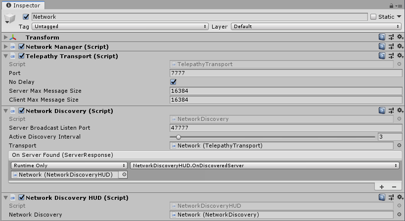

Network Discovery
Suppose your are next to a friend. He starts a game in host mode and you want to join him. How will your phone locate his? Finding out his IP address is not exactly intuitive or something kids can do.
To solve this problem you can use Network Discovery. When your game starts, it sends a message in your current network asking "Is there any server available?". Any server within the same network will reply and provide information about how to connect to it.
Mirror comes with a simple implementation of Network Discovery you can simply use in your game. It also provides a way for you to extend it so that you can pass additional data during the discovery phase.

Quick Start
To use Network Discovery follow these steps:
- Create a gameobject with a NetworkManager if you have not done so already
- Do not add a NetworkManagerHUD. Discovery has a different UI component.
- Add a NetworkDiscoveryHUD component to the NetworkManager gameobject.
A NetworkDiscovery component will be automatically added and wired up to your HUD. - Add a player to the NetworkManager if you have not done so.
- Build and run a standalone version
- Click on Start Host
- Start play mode in the editor and click on Find Servers
- The editor should find the standalone version and display a button
- Click on the button to connect to it.
The NetworkDiscoveryHUD is provided as a simple and quick way to get started, but you will probably want to replace it with your own user interface.
Custom Network Discovery
You can completely replace the user interface by adding your own interface (typically Unity UI based) instead of the default NetworkDiscoveryHUD. You do still need the NetworkDiscovery component to do the heavy lifting.
Sometimes you want to provide more information in the discovery messages. Some use cases could include:
- The client can show if the server is in PvP or PvE mode
- The client can show how full the servers are.
- The client can show the ping to each server so the player can chose the fastest server
- The client can show the language
- The client can show if the server is password protected
To do this, we've provided a Template, so from the Assets menu, click Create > Mirror > Network Discovery.
This will create a script in your project with 2 empty message classes and a custom NetworkDiscovery class that inherits from NetworkDiscoveryBase and has all the override methods included and documented for you.
The message classes define what is sent between the client and server. As long as you keep your messages simple using the data types that Mirror can serialize, you won't need to write custom serializers for them.
public class DiscoveryRequest : MessageBase
{
public string language="en";
// Add properties for whatever information you want sent by clients
// in their broadcast messages that servers will consume.
}
public class DiscoveryResponse : MessageBase
{
enum GameMode {PvP, PvE};
// you probably want uri so clients know how to connect to the server
public Uri uri;
public GameMode GameMode;
public int TotalPlayers;
public int HostPlayerName;
// Add properties for whatever information you want the server to return to
// clients for them to display or consume for establishing a connection.
}
The custom NetworkDiscovery class contains the overrides for handling the messages above.
You may want to refer to the NetworkDiscovery.cs script in the Components/Discovery folder to see how these should be implemented.
public class NewNetworkDiscovery: NetworkDiscoveryBase<DiscoveryRequest, DiscoveryResponse>
{
#region Server
protected override void ProcessClientRequest(DiscoveryRequest request, IPEndPoint endpoint)
{
base.ProcessClientRequest(request, endpoint);
}
protected override DiscoveryResponse ProcessRequest(DiscoveryRequest request, IPEndPoint endpoint)
{
// TODO: Create your response and return it
return new DiscoveryResponse();
}
#endregion
#region Client
protected override DiscoveryRequest GetRequest()
{
return new DiscoveryRequest();
}
protected override void ProcessResponse(DiscoveryResponse response, IPEndPoint endpoint)
{
// TODO: a server replied, do something with the response such as invoking a unityevent
}
#endregion
}